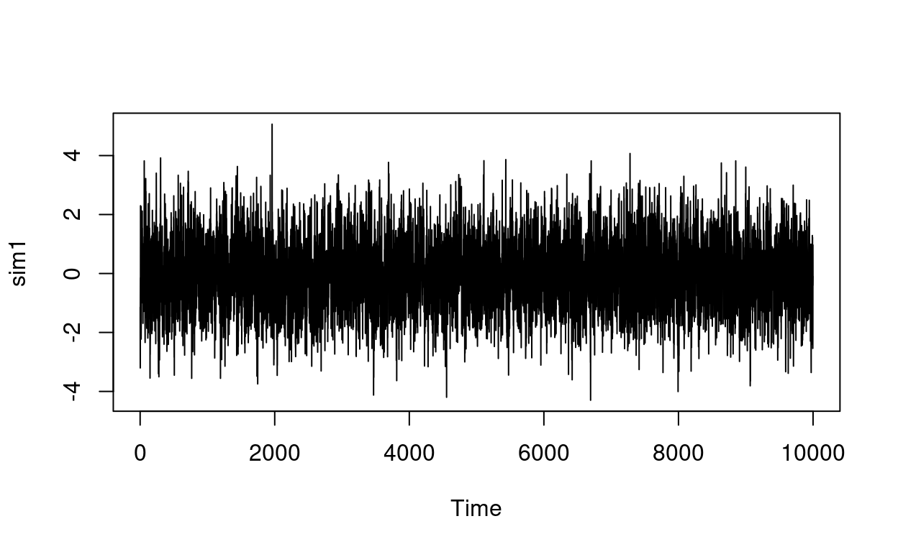
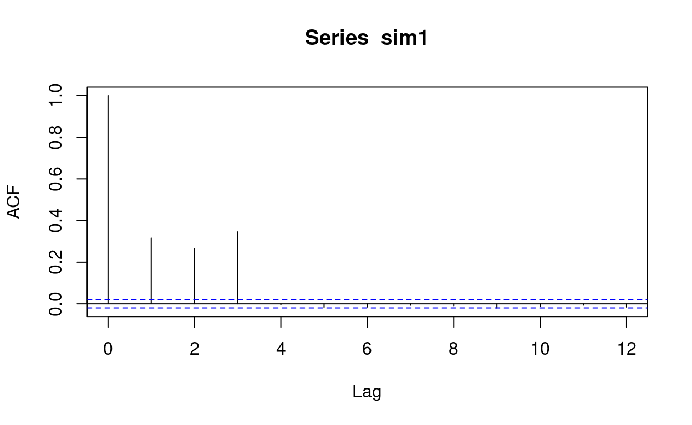

In this tutorial, you will review the concepts of autocorrelation and stationarity. This tutorial is optional, but if you plan on completing it, you are advised to do the following prior to attempting the tutorial.
For your information, here are all the packages that are loaded with this tutorial.
library(learnr) # used to convert my R Markdown into a tutorial
library(tidyverse)
library(tidyquant)
library(fpp2)
library(magrittr)
library(timetk)
library(plotly)
library(scales)
library(tseries)
tutorial_options(exercise.timelimit = 600) # server sleeps with 10 min of inactivityIn class, we have discussed the use of autocorrelation (acf() from base R -- i.e., no packages are required) and partial autocorrelation functions (pacf() from base R -- i.e., no packages are required) to determine the type of models that can be used when modeling different time-series. Below, I provide an overview of what to look for when visualizing each of the acf() and pacf() functions.
acf() %>% autoplot() die-down or cut-off? If the acf cuts-off (i.e., it is quickly indicating that as the lags increase, they 'quickly' become not significant), then the time-series being investigated is likely to be stationary. You can/should confirm your insights by running either the kpss.test() or the adf.test() from the forecast package.acf() %>% autoplot() seem to be geometrically decreasing in magnitude? If the answer is yes (i.e., the series has an exponential/sinsoidual pattern) and the pacf() %>% autoplot() has only lag(1) to be statistically significant (i.e. autocorrelation statistically different than 0)? Then, we have some evidence that an AR(1) may be appropriate to model the time-series.
set.seed(2020)
sim1 = arima.sim(model=list(ma=c(.25, .25, .5)),n=10000)set.seed(2020)
sim1 = arima.sim(model=list(ma=c(.25, .25, .5)),n=10000)
# You can confirm your findings
adf.test(sim1) # we will reject the null hypothesis of non-stationarity
kpss.test(sim1) # we will not reject the null hypothesis of stationarity